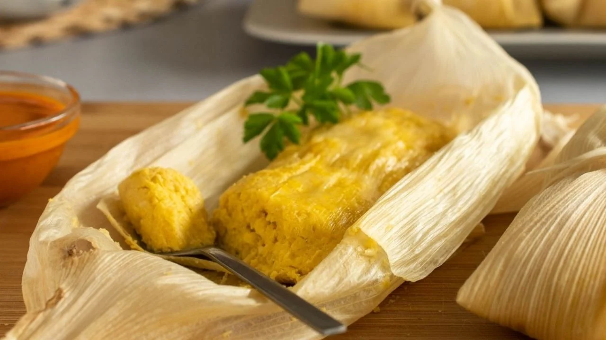

Humita en Chala
La humita combina la dulzura del maíz fresco con el sabor suave del queso y las verduras. Envuelta en su propia chala, es un plato criollo inconfundible.
Autor
Pedro Pascal

Pedro Pascal es un chef apasionado por la cocina creativa y la fusión de sabores. Con años de experiencia en reconocidos restaurantes internacionales, ha logrado combinar técnicas tradicionales con innovaciones modernas, creando platos que no solo sorprenden al paladar, sino que también cuentan historias.
Ingredientes
Para la Humitas
- 6 choclos frescos
- 1 cebolla
- 1 pimiento rojo
- 200 g de queso fresco
- Manteca, sal y pimienta
Receta
- Desgranar los choclos y procesar los granos hasta formar una pasta.
- Saltear cebolla y pimiento picados en manteca.
- Agregar el maíz rallado y cocinar 10 minutos a fuego bajo.
- Incorporar el queso cortado en cubos y condimentos.
- Rellenar las chalas y atarlas firmemente.
- Hervir o cocinar al vapor por unos 30 minutos.
- Servir caliente acompañada de una salsa criolla.
Califica esta receta y deja tu opinión
Selecciona una calificación